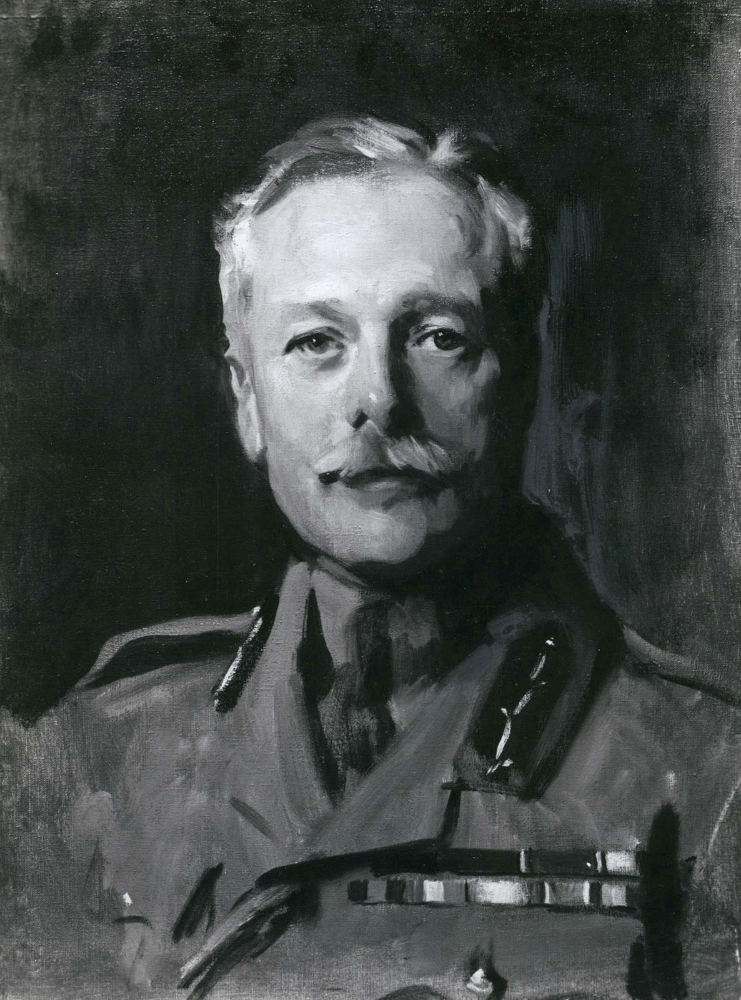

Modern Relevance
Even though Passchendaele is an event long past, it, much like other historical events, is still very relevant today. It represents what happens when leaders become too proud to know their own limitations, properly assess risk, and adapt to changes in environment. General Douglas Haig, main planner and proponent of the Battle of Passchendaele, was a proud man after his previous successes. Despite repeated criticism of his plans, Haig believed in his reasoning ability and would not listen to his colleagues. The result was a horrific, futile battle, complete with 275,000 casualties, and little or no strategic gain, with the regained territory to be evacuated early the following year in wake of a looming enemy assault.
The whole affair was a horrific and pointless display of poor risk assessment, poor planning, and excessive pride. It thus has modern relevance because it is a reminder of the supreme responsibility leaders carry and how they need each other in order to keep in check, because at the end of the day no one is perfect.
Modern-day connections include any “superior” leaders who run things near-single-handedly, the way they see fit. For example, some company executives run their business without much consultation with their lower-down employees, which can not only create an environment of hostility and mutiny but also is not generally effective for business, because the executive may not fully understand the inner workings of their own company, and because they may simply make some bad decisions. More heads are always better than one or a few in making any large decisions such as these.